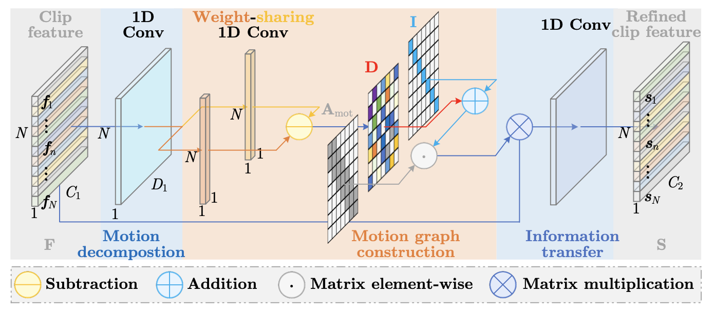

图卷积神经网络 GCN
2023: Hierarchical Graph Convolutional Networks
层级卷积神经网络
1 Abstract
-
当前工作存在的问题：将 video 划分为等长的 clip，可能会导致两种问题
-
intra-clip confusion
-
inter-clip incoherence
-
-
本文创新点：HGC
-
通过 clip refinement（切片细化）来纠正语义信息内的混乱，生成
shot作为基本动作单元解决了 intra-clip confusion 问题
-
构建 scene graph：将连续的一组
shot组合成有意义的scene，从而捕捉local dynamicsscene可以被视为给定动作的另一种 “过程描述”- 解决了 inter-clip incoherence 问题
-
通过顺序聚合 scenes 获取 video-level representation，最终通过回归预测得到分数
-
验证数据集：AQA-7，MTL-AQA，JIGSAWS
-
2 Relative Works
2.1 AQA
主要流派
-
Pose-Based（早期）：使用 pose-based feature 回归预测分数
-
常见 pipeline：
location tracking -- 特征提取 -- 分数预测 -
优势：可以提取 position / speed / direction 等可具体量化的特征
-
劣势
-
在体育运动领域进行姿态估计比较困难：蹲伏/遮挡的存在会导致错估和缺失
-
未考虑“水花”等 “视觉（环境）” 因素
-
-
Sample
-
Pirsiavash
-
估计 pose -> 使用 discrete cosine transform 编码 -> SVR 回归预测
-
由于 照明、视角变换、遮挡 的存在，估计的 pose 并不准确
-
-
-
-
Vision-Based
State-of-the-Art!!!make FULL use of the visual features
-
常见 pipeline：
特征提取 -- 特征聚合 -- 回归预测 -
常用特征提取 backbone: I3D / C3D
但这些 3D-CNN 对于内存和计算资源占用极大，只能应用于短小的 clip
-
因为整个动作序列对于分数都有意义，所以 “动作识别” 用的 “关键帧抽取” 技术在 AQA 问题上不太适用
-
是否使用 对比学习 思想
此外，也可以按照 Input-Format 进行划分:
-
Exampler-Free
-
Exampler-Based (类 CoRE)
-
优势：通过仅回归计算 relative score，提升了准确度
-
劣势：
-
人工选取 sampler 会引入 personal bias（但是应该可以随机抽样？）
-
对于 exampler 进行 feature learning 会引入额外的计算成本
-
-
按照 Output-Fomat 划分：
-
Quality Score Regression：预测准确的分数值（输出是
float） -
Grading：输出评级标签（如
A-E档，或者Good/Bad二分类） -
Pairwise-Sorting：输出 quality score，并提供 rank-coefficient 进行评估
Trade off
Sequence Length x Visual Cues
大部分工作：
-
将视频划分为等长的 clip（16 frames）
-
对每个 clip 独立计算 spatial-temporal features
-
生成 video-level feature：使用平均池化
以上方案的缺点：
-
等长切割对于可能导致每个 clip 中蕴含的 motion-related 语义信息存在 缺失/冗余
-
一个有效的评分周期往往横跨多个基本动作单元（单个 unit 往往不能看到全局信息）
Aggregation Methods
-
常见方法如 Average Pooling，LSTM 无法准确的捕捉 local & global dynamics
-
为了更合理的对 clip 进行划分，boundary detection (of basic motion units) 将作为预训练任务
-
但是 过度切分/错误切分 仍然会导致重要时序信息的缺失
-
此外，边界划分需要的 人工标签 数据集基本不给（手标的成本又很高）
-
-
受 Structured Video Analysis 的启发，本文提出了一种层级结构
shot- basic action unit，包含若干帧scene- 包含若干 连续的shotsaction- 包含若干scenes
2.2 Video Representation Learning
为下游任务提供 Spatial-Temporal Features，从而进行 回归/分类
2.2.1 Key Points（早期）
早期方法:
-
首先识别得到 key points（关键点），再从这些关键点中提取抽象度更高的 feature。
常见方法有：space-time interest points，dense trajectories
-
随后通过 BoW / Fisher Vector 等编码方式，将特征聚合得到 video-level representation
这些方法不能 完整 识别 discriminative features
基于骨架的方法会忽略 subtle diffs，这也是 AQA 前期发展缓慢的重要原因
2.2.2 Deep Learning-Based
性能更好捏
-
最普遍且有效提取 Spatial-Temporal feature 的方法是 3D-CNNs
-
但由于 3D-CNN 计算成本巨大，不能处理 100 frames 以上的长视频片段
AQA 往往先识别 clip-level 特征（再考虑聚合）
2.3 Structured Video Analysis
WHY structured?
- Raw Video 是 非结构化(unstructured) 数据 => 就是 frame stream
- 如果要实现 content-based video processing，就需要考虑将其结构化
-
Hierarchical Video Stucture 层级视频结构
-
shots由连续的 frames 组成-
通过 shot boundary detection methods 进行划分
-
主要 visual content 由 key-frame 进行表示
-
-
groups由 similiar shots 构成 -
scenes由 semantically-related shots 构成
-
-
本文认为：
-
shots 是 basci motion unit，并且相互独立
-
区别于 Wang 等人于 2013 年提出的 latent hierachical model
自动将复杂动作划分为 sub-activitied，使用 SVM 结局 Action Classification 问题
本文使用 GCN 构建深层 hierarchical model，从而解决 AQA 问题
-
3 Approach
3.1 Clip 特征提取
-
Input 表示
-
假设视频共有 \(T\) 帧，则可将输入记为 \(\mathcal{F} = \{X_1,X_2, ..., X_T\}\)
-
假设单帧的像素为 \(W \times H\)，则第 \(t\) 帧可以记为 tensor: \(X_t \in \mathbb{R}^{W\times H \times 3}\)
-
-
Clip 划分
将 \(\mathcal{F}\) 划分为 16-frames / each 的 \(N\) * clips，我们将 clip 序列记为 \(\mathcal{F}_1, \mathcal{F}_2, ..., \mathcal{F}_N\)
-
Featrue Extraction
使用 weight-sharing 的 I3D backbone 对每一个 clip 进行特征提取，得到 \(f_1, f_2, ...,f_N \in \mathbb{R}^{C_1}\)
其中 \(C_1\) 表示 feature demesion
=> 把这一坨 feature 拼合，即可得到特征矩阵 \(\mathbf{F} \in \mathbb{R}^{N \times C_1}\)
3.2 HGCN Modules
Clip Refinement
因为等距划分过于草率，这一模块通过左右调整 boundary 使得 each clip 具有完备的语义信息
下面是两种可能的草率划分情形：
- 当前 clip 包含的语义信息不完整：可能需要从 前/后 的 clip 挪用一些
- 当前 clip 包含了 \(\lt\) 1 motion：需要分给 前/后 的 clip
Feature of Action
假设 action feature 可以由一组正交坐标 \(b_1,b_2, ... , b_B \in \mathbb{R}^{D_1}\) 表示（\(D_1\) 是 embedding dimension）
Clip Refinement Module

-
方案：先通过 Motion Decomposition 找出动作间 transition 发生的位置，再对 clip 进行均贫富处理
-
结果：从 clip feature \(\mathbf{F}\) 生成 shot feature \(\mathbf{S}\)
1 Motion Decomposition
在这一步中，我们需要将抽取的特征 \(f_i\) 映射到 "潜在流形空间 latent manifold space" ，有：
其中 \(\{\lambda_i^j\}\) 是一组用于描述 action freature 的正交坐标
这一操作可以通过 NN 实现，记为以下形式：
-
\(Conv1D_{group}(f,g)\) 是
groupSize = g，kernelSize=1的 1D-Conv 操作各 clip 共享相同权重的 1D-Conv
-
选择 ReLU 是因为计算更高效
2 Motion Graph Construction
我们将有向图 Motion Graph 记为 \(\mathcal{G}_{mot} = (\mathcal{V}_{mot},\mathcal{E}_{mot})\)
- \(\left|\mathcal{V}_{mot}\right|\) 是 motion nodes 构成的点集
- \(\left|\mathcal{E}_{mot}\right|\) 是有向边，使用邻接矩阵 \(\mathbf{A}_{mot} \in \mathbb{R}^{N \times N}\) 表示
由于 information transfer 可能在连续的 \(r\) 个 clip 间进行，我们可以将 \(\mathbf{A}_{mot}\) 记为：
length=r 的滑动窗口遮罩如何决定 frames 移动的 direction (前/后) & magnitude (具体移动多少个 clip)？
-
学习距离函数 \(d_{ij}\) 来衡量 \((m_i, m_j)\) 之间的距离（主要就是学参数矩阵 \(\mathbf{W}_{mot} \in \mathbb{R}^{D_1 \times 1}\)
\[ d_{ij} = \tanh((m_i - m_j) \cdot \mathbf{W}_{mot}) \in [-1,1] \]-
\(sign(d_{ij})\) 表示 transfer 发生的方向（前/后/不变）
-
\(sign(d_{ij}) \lt 0\) 表示 clip-i 需要从 clip-j 接收数量为 \(\|d_i{j}\|\) 的 feature（此时 transition 发生在 clip-i 内）
-
\(sign(d_{ij}) == 0\) 表示边界不需要移动
-
-
\(\|d_i{j}\|\) 表示 transfer 的梯度（具体横跨几个 clip）
-
3 Information Transfer
这里使用一个 GCN Layer 完成 \((f_i,f_j)\) 之间的 transfer，得到 shot feature \(s_i \in \mathbb{R}^{C_2}\)：
- 其中：\(B_{mot}^{ij} = A_{mot}^{ij} \cdot d_{ij}\)，\(\mathbf{W}_{tra}, \mathbf{U}_{tra} \in \mathbb{R}^{C_1 \times C_2}\)，\(\mathcal{N}_i\) 是 clip-i 的邻域（前后 \(r\) 个）
4 Sequential Property
-
先前的工作证明：Encoder 可以有效的将 raw data 映射到 motion manifold
-
但是 seperate clip encoding 不能保留 sequential property
=> 相邻 clip 之间的距离很小，而不相邻 clip 之间的 clip 较大
-
常用的 Laplace 正则化考虑了 时空 上的 closeness，但这在本文中不太适用
=> 提出了 clip-level closeness 的度量 \(O\)：
\[ \begin{align*} O &= \mathop{\min}_h \sum+{i=1}^N \sum_{j=1}^N A_{mot}^{ij} \|h_i - h_j\|_2^2\\ &= \mathop{\min}_H \text{tr}(\mathbf{HLH}^T) \end{align*} \]- \(h_i \in \mathbb{R}^{C_2}\) 是 clip feature (\(f_i\)) emedding 后的结果
- \(\mathbf{H} \in \mathbb{R}^{N \times C_2}\) 是 \(\{h_i\}\) 形成的矩阵，\(\mathbf{L} \in \mathbb{R}^{N \times N}\) 是 \(A_{mot}\) 的拉普拉斯矩阵
Theorem
当 \(H = FW\) 时，GCN 的传播过程 \(\Leftrightarrow\) 优化上述的 clip-level 正则化表达式
Scene Construction
旨在将连续的几个 shots 组合成一个 meaningful scene
-
本文同样认为同一类的 Video 由固定的 Action Procedures 构成，比如 跳水 = 起跳 -> 翻滚 -> 入水
-
而 本模块 可以捕捉各个 procedure 的所有 subtle diff，从而准确的对细节进行评估
-
Shot Graph Construction
-
与 Motion-Graph 类似，可以将 Shot Graph 视作 点集 + 边集 只和，记为：
\[ \mathcal{G}_{sht} = (\mathcal{V}_{sht},\mathcal{E}_{sht}) \]但不同于 Motion Graph 量化不同 shot 之间的 diffrerence，Shot Graph 旨在寻找同一 scene 中各个 shot 之间的 similarity
-
类似的，设置
neighborhoodSize = K，可以得到控制 \(s_i,s_j\) 之间 connection 的邻接矩阵 \(A_{sht}^{ij}\) -
我们假设：属于同一 scene 的各 shots 之间的连接更加紧密
显然，0-1 邻接矩阵 \(A_{sht}^{ij}\) 无法对此进行衡量
为此，作者提出了使用 self-attention 的可学习邻接矩阵 \(B_{ij}\) 对 \(s_i,s_j\) 之间的邻接紧密性进行量化：
\[ B_{sht}^{ij} = \text{softmax}\left( \frac{(s_iW_1) \cdot (s_jW_2)^T}{\sqrt{D_2}} \right) \]
-
-
Shot Graph Aggregation
这也可以用一个 GCN Layer 实现：
\[ s'_i = ReLU(s_iW_{sht} + \sum_{j\in \mathcal{N}_i} A_{adp}^{ij}\ s_j\ U_{sht}) \]其中 \(A_{adp}^{ij}\) 视情况选择 \(A_{sht} \odot B_{sht}\) 或 \(A_{sht} + B_{sht}\)
-
Shot Reduction
尽管跳水比赛都有相同的 procedure 序列，但各 procedure 可能包含不同的 shots
=> 为此，文章通过 GCN Layer 学习矩阵 \(T\) 实现 \(N*shots \rightarrow S*scenes\) 的 映射
\[ T = \text{softmax}(\oplus_{i=1}^N A_{adp}\ \sum_{j=1}^N\ s'_j\ W_{tft}) \]
其中 \(E\) 是 \(S\) 个 scenes \(\{e_i\}\) 拼接得到的，\(S'\) 是更新后的 shot feature \(\{s'_i\}\) 拼接得到的
Action Aggregation
用于捕捉一些 global dynamics，用于衡量总体表现
由于动作只能从 i 单向过渡到 i+1（不能反过来）
=> 我们需要学习各个 procedure 之间的依赖关系，并最终聚合得到 video-level representation
-
Scene Graphp Construction
\[ \mathcal{G}_{sce} = (\mathcal{V}_{sce},\mathcal{E}_{sce}) \]为了控制信息严格 前 \(\rightarrow\) 后 流动，此处
A_sce[i][j] = (i-j > 0) ? 1 : 0因为此处同样需要连接的 方向 & 梯度，所以也需要学习 adaptive weight:
\[ B_{sce}^{ij} = \text{softmax}\left(\frac{(e_i\ U_1)\cdot(e_j\ U_2)^T}{\sqrt{D_3}}\right) \] -
Video-level Aggregation
还是使用 GCN Layer 实现：
\[ e'_i = ReLU(e_i\ W_{act} + \sum_{j\in \mathcal{{N}_i}}(A_{sce} \cdot B_{sce})\ e_j\ U_{act}) \]更新后的 secene feature \(\{e'_i\}\) 将作为最后用于回归的 video-level representation
3.3 Score Regression
并不是直接回归，从而降低评委主观因素的影响
-
降低评委主观因素影响的常见方法是 uncertainty-aware score distribution learning
主要思路是学习一个分数分布，使得两个不同 action 之间的得分具有较大差异
-
相似的，本文认为最终的分数是一个 random variable，并对其分数分布概率函数进行学习
对于 video-level representation \(v (e')\):
-
使用 Probabilistic Encoder \(\mathbb{R}^{C_4} \rightarrow \mathbb{R}\) 将其映射为 random score variable \(s\)
-
变量 \(s\) 应当服从高斯分布，即：
\[ p(s;v) = \frac{1}{\sqrt{2\pi\sigma^2(v)}} \exp(- \frac{(s-\mu(v))^2}{2\sigma^2(v)}) \]其中 \(\mu\) 对应均值，\(\sigma\) 对应标准差
-
Sample \(\varepsilon\) from 标准分布 \(\mathcal{N}(0,1)\)，从而确保 encoder 的训练过程的可行性
这样一来 score distribution sampling 过程就是 可微的(differentiable)
-
基于随机独立采样变量 \(\varepsilon\)、均值 \(\mu(v)\) 与 标准差 \(\sigma(v)\) 计算最终的预测结果 \(\hat{s}\)
\[ \hat{s} = \mu(v) + \varepsilon \cdot \sigma(v) \]
3.4 Loss Function
对于 score distribution regression 过程，使用 MSE Loss 进行评估：
Convenience
通过比较 \(m_i, m_j\) 对应的系数 \(\lambda_i^x, \lambda_j^x\)，我们可以方便的计算任意两个 clip 之间的 direction & magnitude